| Feature groups | Nfeatures | Nassmt.full | Nassmt.part |
|---|---|---|---|
| Mammals (ma) | 7 | 25 | 0 |
| Fishes & amphibians (fa) | 6 | 15 | 0 |
| Insects and molluscs (im) | 14 | 23 | 3 |
| Vascular plants (vp) | 33 | 47 | 5 |
| Mosses (mo) | 12 | 31 | 1 |
| Habitat types (ht) | 6 | 17 | 0 |
| Total | 78 | 158 | 9 |
Bern25 summary charts
The scope of the reporting
There were altogether 72 species and 6 habitat types involved in the assessment (Table 1). Species and habitat types are collectively called features so there were altogether 78 features assessed. (TODO: explain BGRs, assessments (feature x BGR), Emerald, etc…)
Conservation status of species and habitat types
We start with presenting an overview of the conclusions of the assessments. Each assessment has an overall conclusion, which is based on four “parameters”, each of which has its own conclusions. The conclusions for the individual parameters rely on quantitative and qualitative data collected by taxonomic experts following detailed guidelines provided by the Bern Secretariat. The four assessment parameters for species include its distribution range (Ran), population size (Pop), the quality and quantity of the available habitat for the species (H4s), and its future prospects (Fpr) based on the balance of pressures and conservation measures. All conclusions are evaluated in a simple “traffic light system” using one of the following four conservation status categories:
- FV: Favourable (green),
- U1: Unfavourable - inadequate (amber),
- U2: Unfavourable - bad (red),
- XX: Unknown (grey).
Species assessments
Table 2 provides an overview of the overall conclusions across the major species groups, whereas Table 3 shows the distribution of the partial conclusions for the individual parameters across all the species.
| Species groups | FV | U1 | U2 | XX |
|---|---|---|---|---|
| Mammals (ma) | 3 | 20 | 2 | — |
| Fishes & amphibians (fa) | — | 3 | 3 | 9 |
| Insects and molluscs (im) | 3 | 6 | 8 | 6 |
| Vascular plants (vp) | 1 | 26 | 18 | 2 |
| Mosses (mo) | 5 | 15 | 11 | — |
| All (all) | 12 | 70 | 42 | 17 |
| Assessment parameters | FV | U1 | U2 | XX |
|---|---|---|---|---|
| Range (Ran) | 48 | 54 | 14 | 25 |
| Population (Pop) | 15 | 83 | 11 | 32 |
| Habitat for species (H4s) | 41 | 50 | 33 | 17 |
| Future prospects (Fpr) | 14 | 68 | 39 | 20 |
Below we also visualise the distribution of the conclusions across the different species groups and assessment parameters (Figure 1).
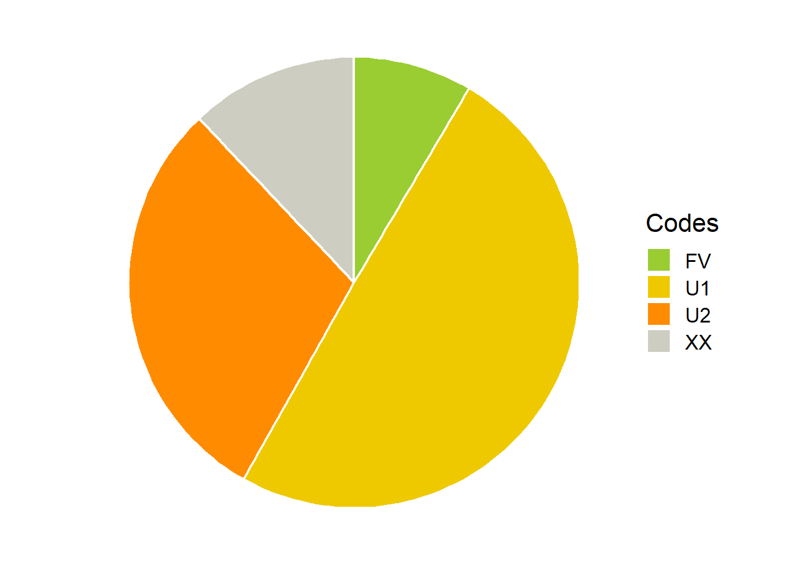
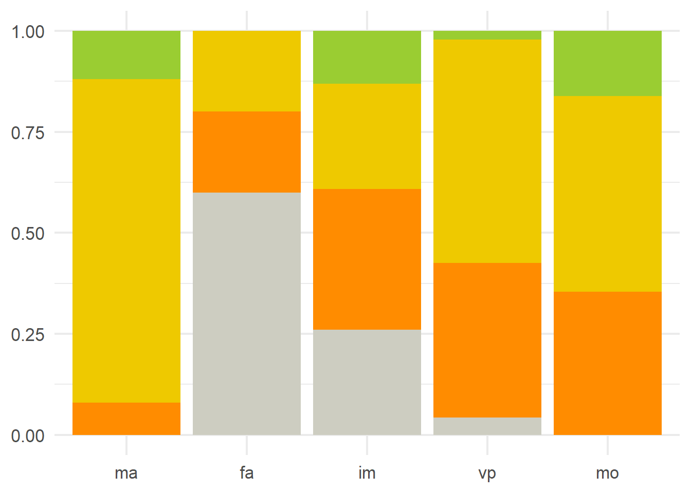
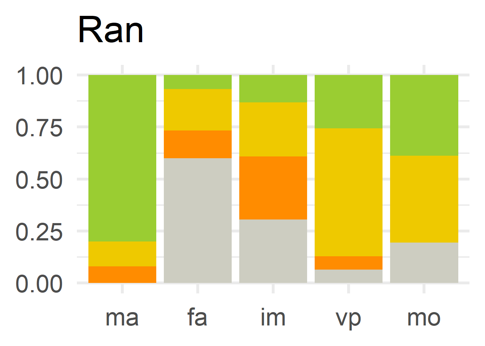
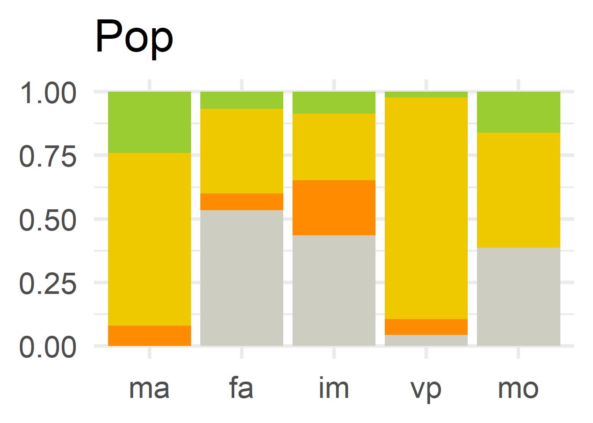
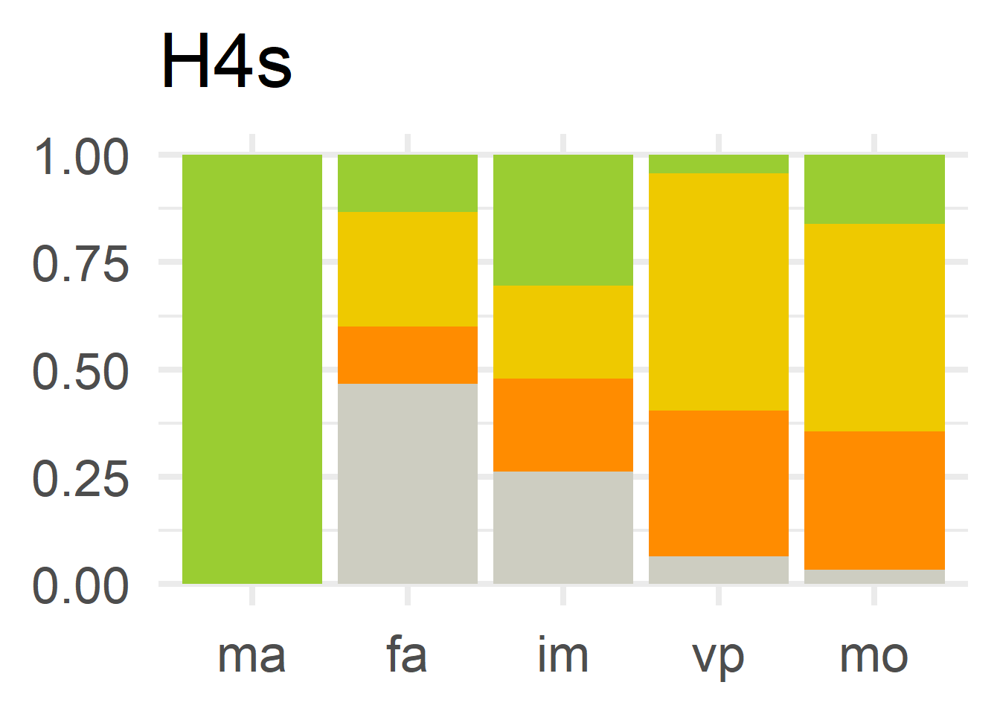
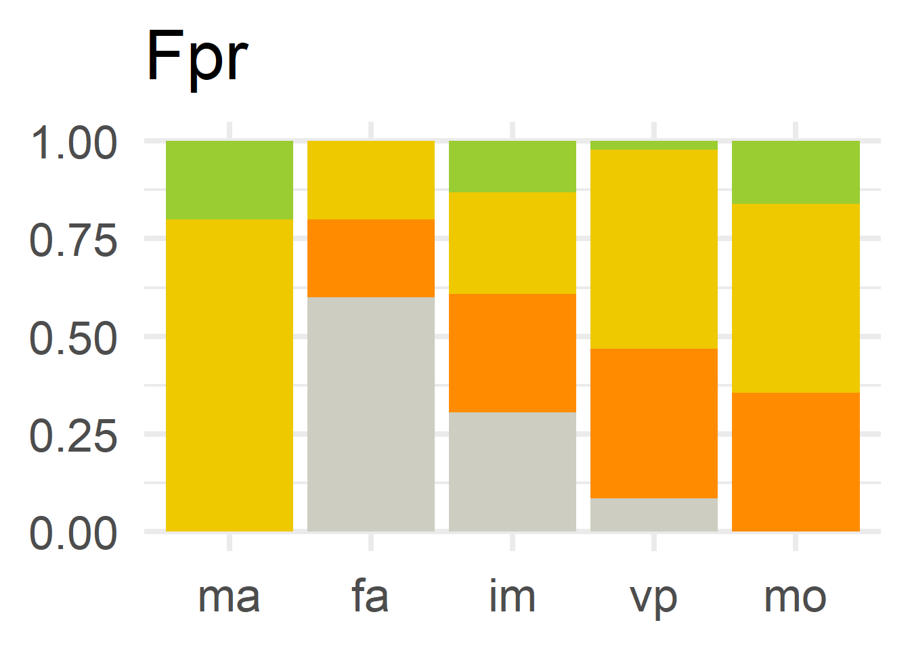
Habitat type assessments
Table 4 and Figure 2 provide an overview of the different conclusions for the habitat types assessed in 2025 in Norway.
| Assessment parameters | FV | U1 | U2 | XX |
|---|---|---|---|---|
| Range (Ran) | 15 | — | 2 | — |
| Area of habitats (Are) | — | 9 | 8 | — |
| Structure and function (SnF) | — | 5 | 12 | — |
| Future prospects (Fpr) | — | 5 | 12 | — |
| Overall conclusion (OvC) | — | 5 | 12 | — |
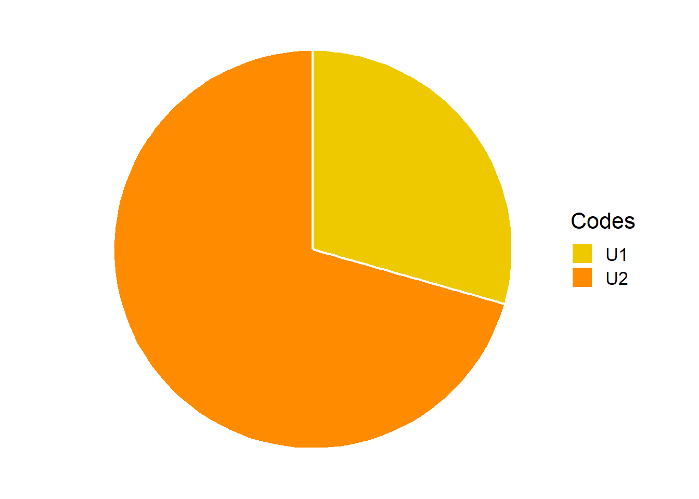
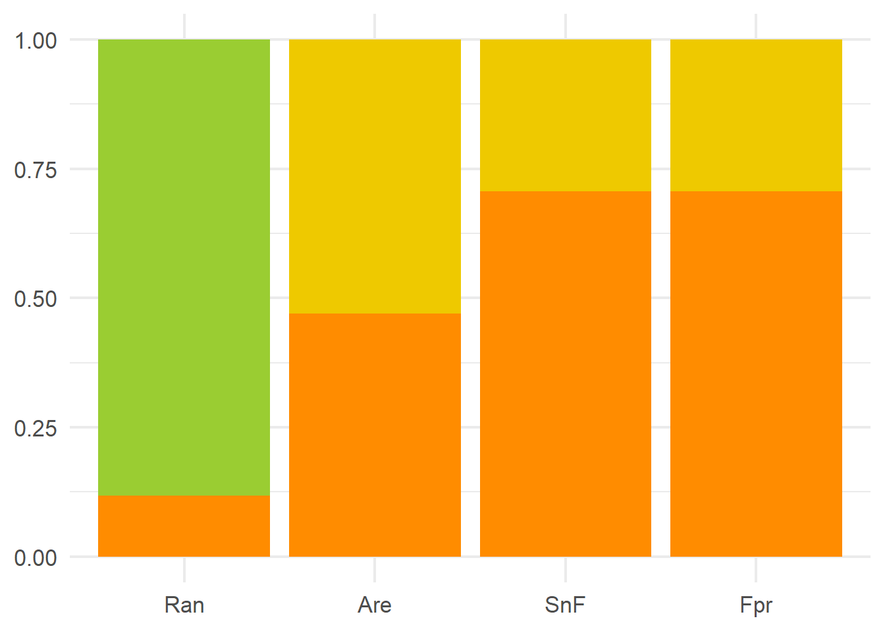
Changes and trends
The assessment protocol offers several ways to describe past, present and future trends in the conservation status of the studied species and habitats. This includes the assessment of the short-term and long-term trends by the experts participating in the 2025 assessment, as well as a direct comparisons of the consecutive assessments (e.g comparing the conservation status of the same species & habitats assessed in 2019 and 2025). In the context of the Bern Convention short-term trends always refer to the past 12 years (i.e. 2013-2024 in this case), whereas long term trends are referring to the 24 year period before the assessment date (i.e. 2001-2024). In addition, the parameter future prospects discussed in the previous section also addresses trends, synthesizing expectations for changes in the other three parameters during the forthcoming 12 years (i.e. 2025-2036).
In the next few sections we provide an overview of the main current and past trends relying on the different elements of the Bern assessment protocol.
Short term trends
Short term trends are first assessed individually for the different state parameters (range, population size, and habitat availability for species, and range, area, and structure/function for habitat types), and then the directions of these elementary trends are aggregated into an overall trend qualifier, which is the second flagship output of Bern Convention assessments, providing critical insights for the interpretation of the overall conservation status. In Figure 3 we provide an overview of these trend qualifiers for the different groups of features.
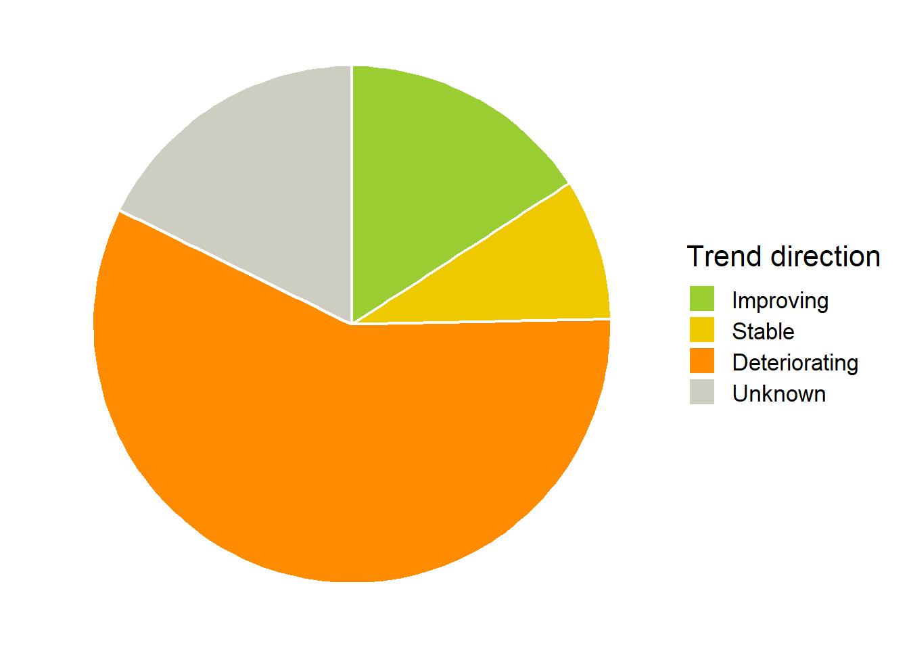
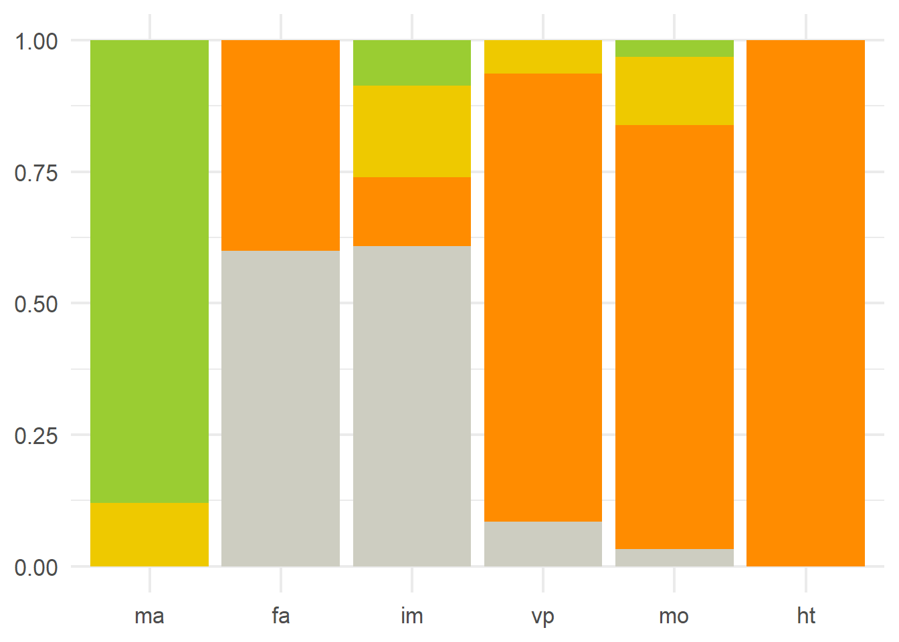
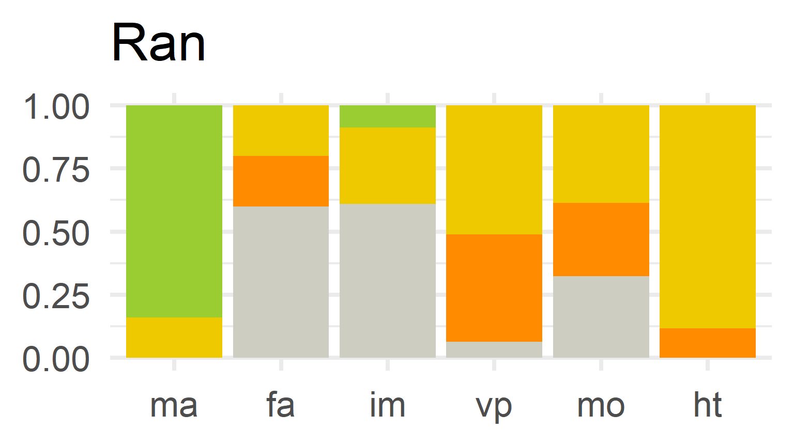
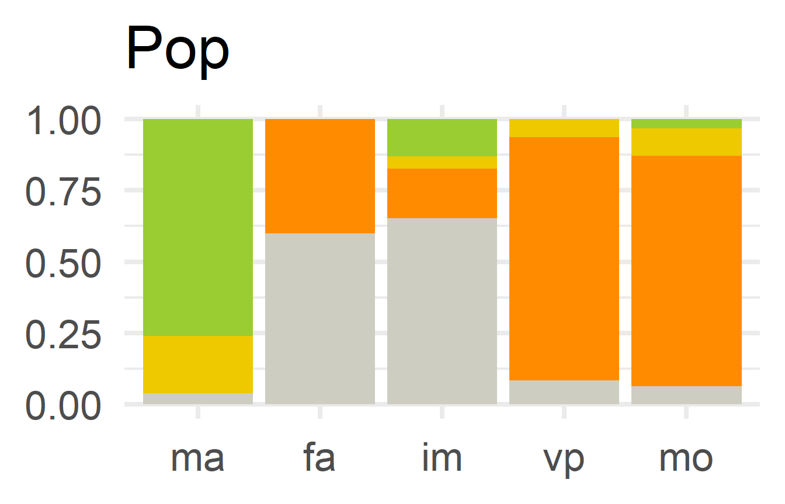
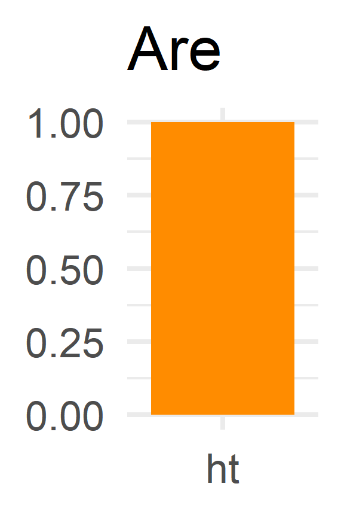
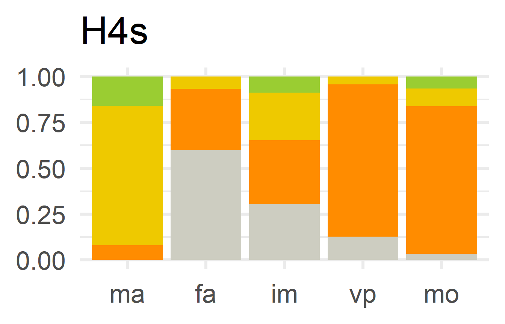
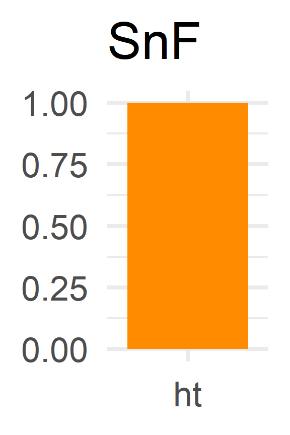
Long term trends
In this reporting round, long-term trends were only assessed for some of the parameters (range & population size for species, and range and area for habitat types), and only in cases when the expert were long-term evidence was available. These cases means that… … ?@tbl-xxxx provides an overview of the
Changes since 2019
The 2019 reporting period was the first reporting period for Norway under Resolution 8 of the Bern Convention. This reporting period was considered to be a pilot exercise by the Bern Convention Secretariat, so only very few species and habitat types were selected for reporting. Table 5 provides an overview of the changes in the overall assessment conclusions for the overlapping species.
| Change | N | Assessments |
|---|---|---|
| U1 --> U1 | 5 | Gulflekktorvlibelle (ATL); marisko (ALP, ATL, BOR); rikmyr (ALP) |
| U2 --> U2 | 5 | Alvemose (ATL, BOR); eremitt (BOR); rikmyr (ATL, BOR) |
| FV --> U1 | 4 | Oter (ALP, ARC, ATL, BOR) |
| XX --> U1 | 4 | Brunbjørn (ALP, BOR); ulv (ALP, BOR) |
| U1 --> U2 | 3 | Alvemose (ALP); edellauvskog (ATL, BOR) |
| XX --> XX | 3 | Bekkeniøye (ATL, BOR); smalknøttsnegl (BOR) |
| U2 --> U1 | 2 | Myrsildre (ALP, ATL) |
| FV --> XX | 1 | Hvitfinnet steinulk (BOR) |
| U1 --> FV | 1 | Gulflekktorvlibelle (BOR) |
If the overall conservation status of a species/habitat changed since 2019 then the experts were were requested to assess the main reasons for the change. They could select more then one reason from a list that included genuine change, changes in data or methods. The results are summarised in Table 6.
| Reasons for status change between 2019 & 2025 | N | Assessments |
|---|---|---|
| Genuine change | 4 | Edellauvskog (ATL, BOR); gulflekktorvlibelle (ATL, BOR) |
| Improved knowledge/more accurate data | 4 | Oter (ALP, ARC, ATL, BOR) |
| Other reasons | 18 | Brunbjørn (ALP, ARC, ATL, BOR); gaupe (ALP, ARC, ATL, BOR); gulflekktorvlibelle (ATL, BOR); jerv (ALP, ARC, ATL, BOR); ulv (ALP, ARC, ATL, BOR) |
Background factors
A major element of the Bern Convention (Resolution 8) reporting protocol is the assessment of pressures (i.e. threats) and conservation measures affecting the status and trends of the selected species and habitat types. These factors have a key role in the assessment of the future prospects parameter, but and they can also provide relevant information by themselves, e.g. for effective conservation planning. The assessment protocol offers a long list of predefined types of pressures and conservation measures, and the experts could choose from these lists, assigning an ordered list of pressures and measures to each species and habitat type.
Key pressures
Beyond just listing the relevant pressures the experts also had to characterise them from three different perspectives: its timing (past, ongoing or expected future pressure), extent (the share of the population/area it affects), and influence (the degree of impact on the affected population/area). Table 7 presents an overview of the pressures that were most commonly listed as “ongoing” threats across all species and habitat types.
| Code | Pressure name | N |
Feature groups
ma
fa
im
vp
mo
ht
|
|---|---|---|---|
| PE01 | Roads, paths, railroads and related infrastructure | 42 | |
| PI03 | Problematic native species | 41 | |
| PF01 | Conversion from other land uses to built-up areas | 38 | |
| PJ03 | Changes in precipitation regimes due to climate change | 34 | |
| PJ01 | Temperature changes and extremes due to climate change | 30 | |
| PB09 | Clear-cutting, removal of all trees | 28 | |
| PD02 | Hydropower (dams, weirs, run-off-the-river and respective infrastructure) | 28 | |
| PF03 | Creation or development of sports, tourism and leisure infrastructure | 28 | |
| PJ10 | Change of habitat location, size, and / or quality due to climate change | 28 | |
| PA05 | Abandonment of management/use of grasslands and other agricultural and agroforestry systems (e.g. cessation of grazing, mowing or traditional farming) | 23 | |
| PF13 | Drainage, land reclamation and conversion of wetlands, marshes, bogs, etc. for built-up areas | 23 | |
| PB24 | Drainage for forestry | 20 | |
| PG11 | Illegal shooting/killing | 20 | |
| PB06 | Logging or thinning (excluding clear cutting) | 18 | |
| PA13 | Application of natural or synthetic fertilisers on agricultural land | 17 | |
| PG08 | Hunting | 16 | |
| PA07 | Intensive grazing or overgrazing by livestock | 15 | |
| PB23 | Physical alteration of water bodies for forestry (including dams) | 14 | |
| PB02 | Conversion from one type of forestry land use to another | 13 | |
| PI02 | Other invasive alien species (other than species of Bern Convention concern) | 12 |
Main conservation measures
Similarly to the pressures, the experts also identified the morst important conservation measures for each feature in each biogeographic region. This included all “ongoing” (actively implemented) conservation measures, as well as any clearly useful, but not yet implemented measures. In addition, for each already implemented measure the experts also documented if the measures were implemented only within the Emerald sites, or also beyond them. Table 8 presents an overview of the most frequently applied conservation measures.
| Code | Conservation measure name | N |
Feature groups
ma
fa
im
vp
mo
ht
|
|---|---|---|---|
| MG02 | Management of hunting, recreational fishing, and the recreational or commercial harvesting or collection of plants and fungi (incl. restoration of habitats) | 7 | |
| MS04 | Manage native species (incl. species which are not protected by the Bern Convention / Resolution No. 6 (1998)) | 5 | |
| MA01 | Prevent conversion of natural and semi-natural habitats, and habitats of species into agricultural land | 4 | |
| MA03 | Maintain existing extensive agricultural practices and agricultural landscape features | 4 | |
| MG01 | Management of professional/commercial fishing, shellfish and seaweed harvesting (incl. restoration of habitats) | 4 | |
| MI03 | Management, control or eradication of other invasive alien species | 4 | |
| MS01 | Reinforce populations of species from the Resolution No. 6 (1998) | 4 | |
| MB14 | Manage drainage and water abstraction for forestry (inc. restoration of drained or hydrologically altered habitats) | 3 | |
| MC04 | Reduce impact of hydropower operation and infrastructure (incl. the restoration of freshwater habitats) | 3 | |
| ME06 | Habitat restoration of areas impacted by transport | 3 |
Role of the Emerald Network
Protected areas, and in particular the Emerald Network is assumed to provide substantial support for endangered species and habitats. Several parts of the Bern assessment explore the influence of the Emerald Network, thus providing useful feedback for conservation management. In Table 9 we compare within Emerald short-term trends of several parameters with the general trends of the same parameters within the entire biogeographic region. This comparison is only sensitive to the direction of the trend, so significant differences between slight and drastic declines (or improvements) can still be marked as “same within/beyond Emerald” in Table 9.
| Trends within/beyond Emerald | Population (Pop) | Habitat for species (H4s) | Area of habitats (Are) | Structure and function (SnF) |
|---|---|---|---|---|
| Better within Emerald | 1 | 2 | 15 | 13 |
| Same trend within/beyond | 72 | 84 | 2 | 4 |
| Better beyond Emerald | 3 | 1 | — | — |
| Unknown (at least partly) | 65 | 54 | — | — |
# A quick temporary overview of the most interesting cases of the table above:
tmp2 %>%
filter(para %in% c("Pop", "H4s"), cc2 %in% c("better", "worse")) %>%
mutate(species=map_chr(spp, \(x) str_c(x, collapse=", "))) %>%
select(para, cc2, species) %>%
print# A tibble: 4 × 3
para cc2 species
<chr> <fct> <chr>
1 H4s better grønnsko, russeburkne
2 Pop better grønnsko
3 H4s worse oter
4 Pop worse gulflekktorvlibelle, oterIn addition we can also compare the implementation of the conservation measures within and beyond the Emerald Network based on the answers of the experts. Table 10 offers such a comparison.
| Code | Conservation measure name | Nin | Ni.o | Nout |
|---|---|---|---|---|
| MG02 | Management of hunting, recreational fishing, and the recreational or commercial harvesting or collection of plants and fungi (incl. restoration of habitats) | 0 | 5 | 2 |
| MS04 | Manage native species (incl. species which are not protected by the Bern Convention / Resolution No. 6 (1998)) | 1 | 2 | 2 |
| MA01 | Prevent conversion of natural and semi-natural habitats, and habitats of species into agricultural land | 0 | 0 | 4 |
| MA03 | Maintain existing extensive agricultural practices and agricultural landscape features | 0 | 3 | 1 |
| MG01 | Management of professional/commercial fishing, shellfish and seaweed harvesting (incl. restoration of habitats) | 0 | 2 | 2 |
| MI03 | Management, control or eradication of other invasive alien species | 0 | 3 | 1 |
| MS01 | Reinforce populations of species from the Resolution No. 6 (1998) | 1 | 0 | 3 |
| MB14 | Manage drainage and water abstraction for forestry (inc. restoration of drained or hydrologically altered habitats) | 0 | 0 | 3 |
| MC04 | Reduce impact of hydropower operation and infrastructure (incl. the restoration of freshwater habitats) | 0 | 2 | 1 |
| ME06 | Habitat restoration of areas impacted by transport | 0 | 0 | 3 |
Fjellrev: a success story
TBC…
Data availability
(?) TBD/TBC…
References
Annexes
- A table with all species & habitats (incl latin names) and their main conclusions
- (??) A list of simple “conclusion figures” for each species & habitat (one per page)